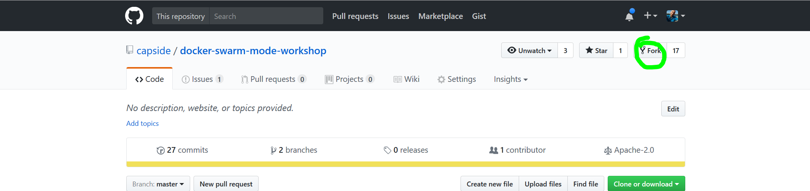
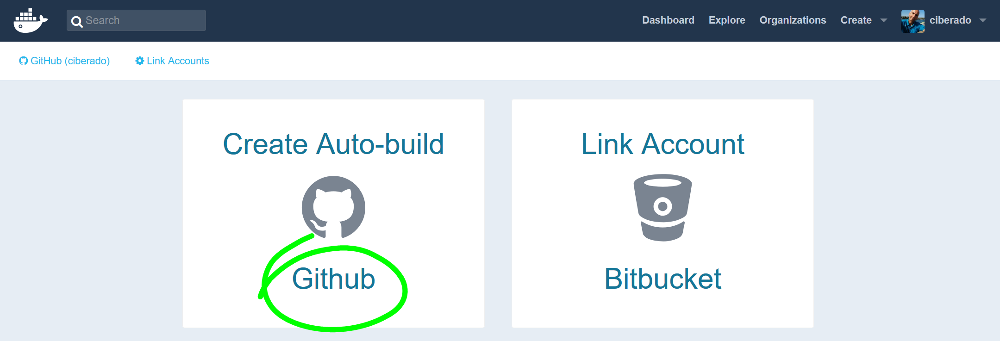
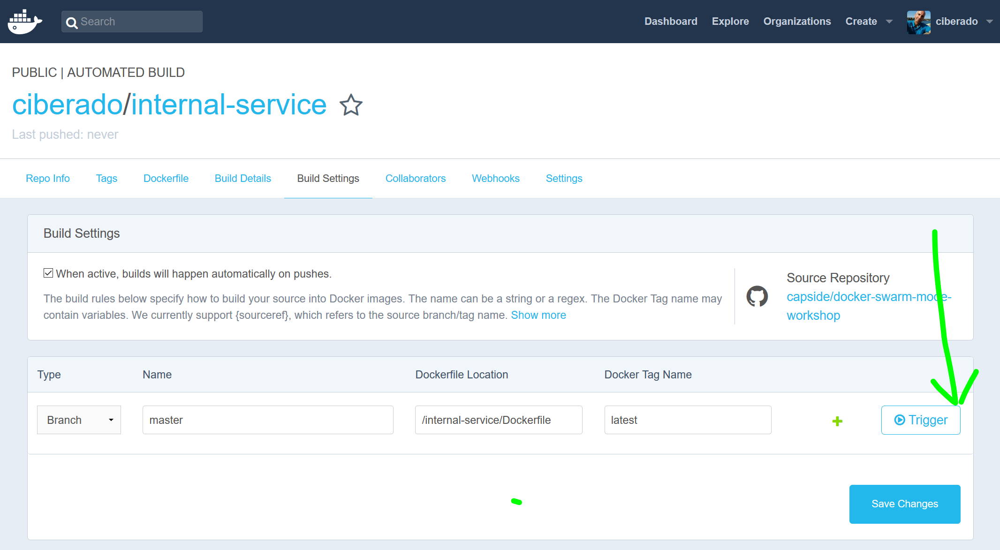

Se trata de un servidor http mínimo en nodejs y el Dockerfile asociado:
FROM node:7.10.0-alpine
COPY RiverSongService.js .
EXPOSE 8888
CMD ["node", "RiverSongService.js"]





docker info
Ejecuta la imagen en un contenedor
docker run ^
--detach ^
--name internal_service ^
--rm \
--publish 80:8888 ^
--label priority=medium ^
<tu-repositorio>/internal-service
Localiza los servicios con prioridad medium (también puedes usar docker container ls)
docker ps --format {{.ID}}\t{{.Names}}\t{{.Image}}\t{{.Labels}} --filter name=serv --filter label=priority=medium
docker inspect internal_service
docker inspect internal_service | jq '.[0].NetworkSettings.Ports | to_entries[] | "\(.key) -> \(.value [].HostPort)"'
docker port internal_service
docker logs internal_service
docker stats
docker run ^
--detach ^
--name external_service ^
--publish 81:80 ^
--link internal_service ^
--env INTERNAL_SERVICE_NAME=internal_service ^
ciberado/external-service
Comprueba que el servicio interno está publicado abriendo localhost:81
Para los contenedores (también puedes usar docker kill)
docker stop internal_service
docker stop external_service
docker ps -a --filter status=exited
--rm al arrancarlo)docker rm external_service
docker network create gallifrey
docker run ^
--detach ^
--name internal_service ^
--label priority=medium ^
--network gallifrey ^
ciberado/internal-service
docker run ^
--detach ^
--name external_service ^
--publish 80:80 ^
--network gallifrey ^
--env INTERNAL_SERVICE_NAME=internal_service ^
ciberado/external-service
Comprueba que puedes acceder a la aplicación con el navegador (esta vez en el puerto 80) y que los contenedores siguen resolviendo sus nombres correctamente
Elimina todos los contenedores
Unix:
docker rm --force $(docker ps -aq)
Windows:
for /f %i in ('docker ps -aq') do docker rm --force %i
docker system df
docker system prune --all